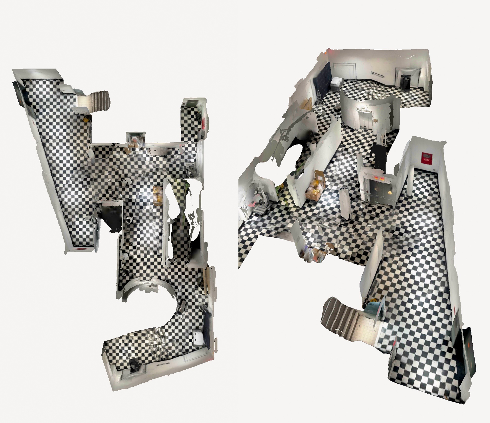
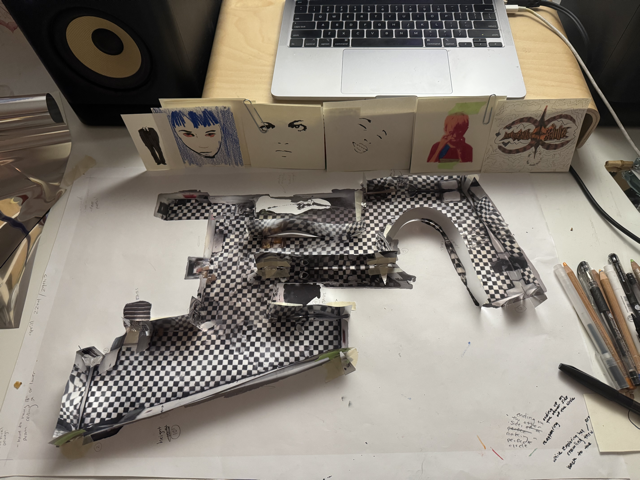
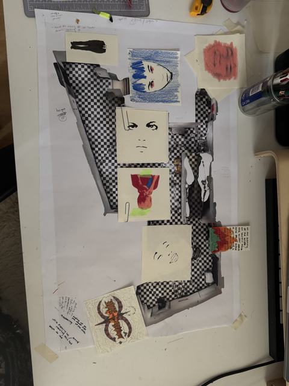
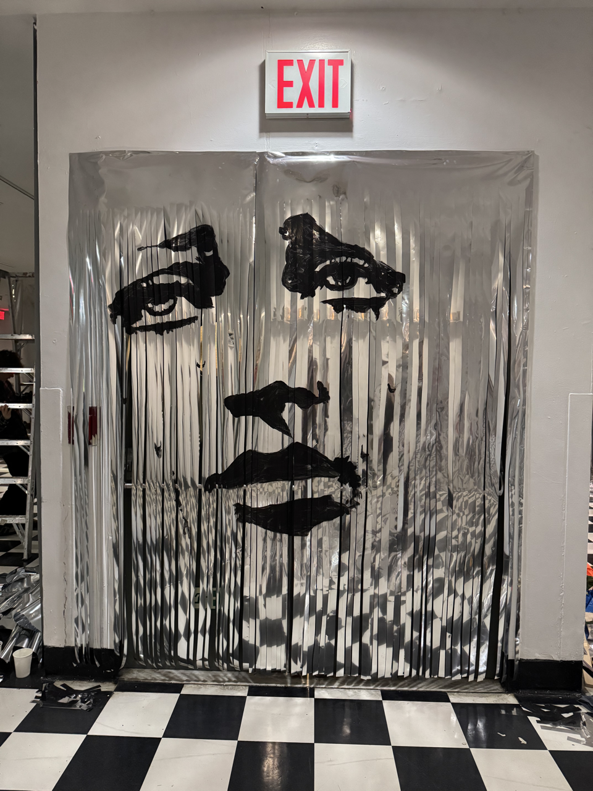

My senior show.
Idk how I ended up with the basement.

I mean look at this freaky feng shui...
and the checkerboard floor.
I was thinking a lot about duality at the time,
so I made a mini model of the basement and thought about the architecture of my mind and the symbols that were bouncing around in it.
I found metallized polyester film that I could cover the room with.



I was thinking about emotion and symbolism and wanted to be able to move through these symbols in space, so
I used acrylic paint on large metallized polyester film and then shredded those images so you were able to walk through them.
I painted them on both sides.


I put the paintings in doorways and entrances to the elevators.
I apologize to the entire student affairs office for breaking fire hazard rules.


I covered every wall in the reflective material.